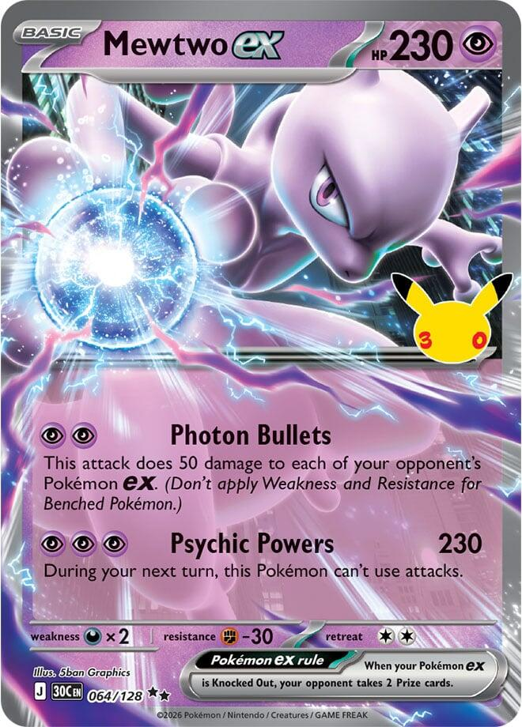
x3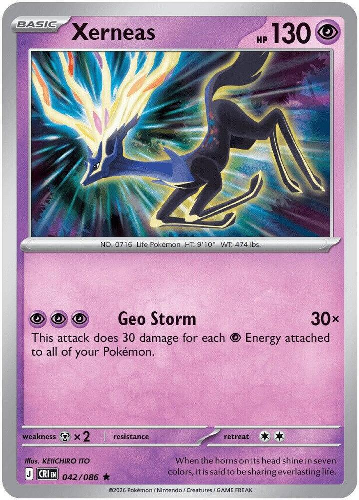
x4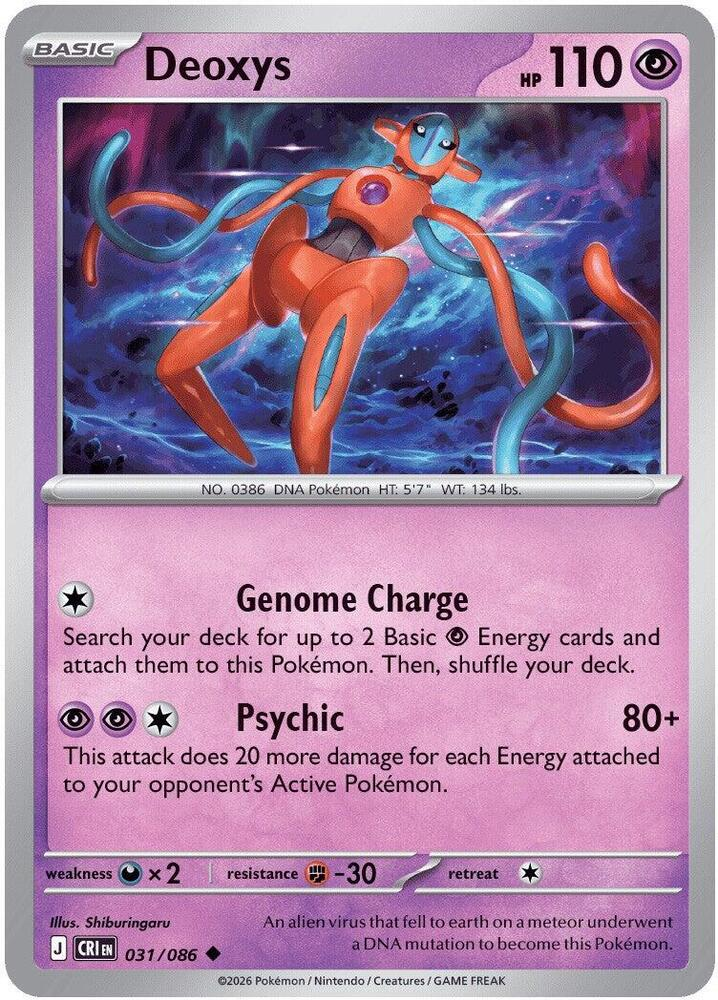
x3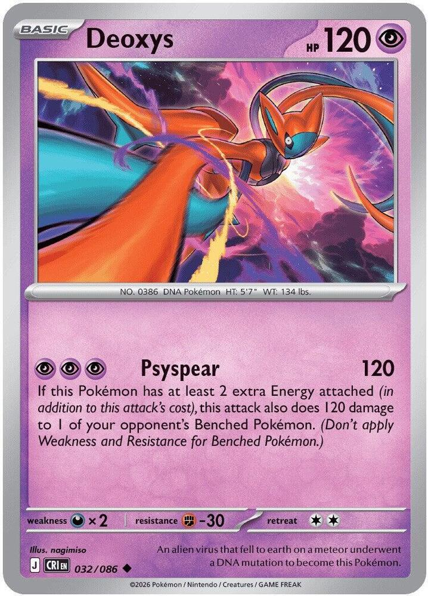
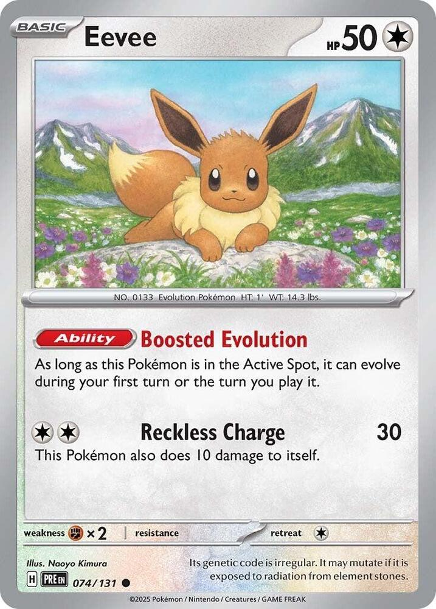
x3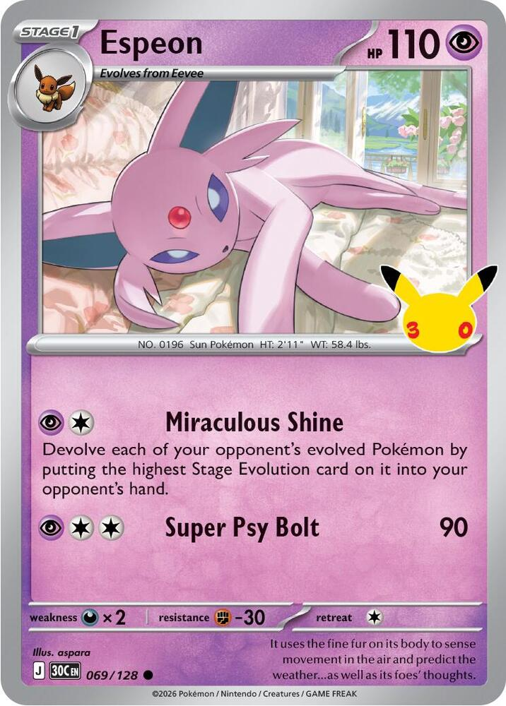
x2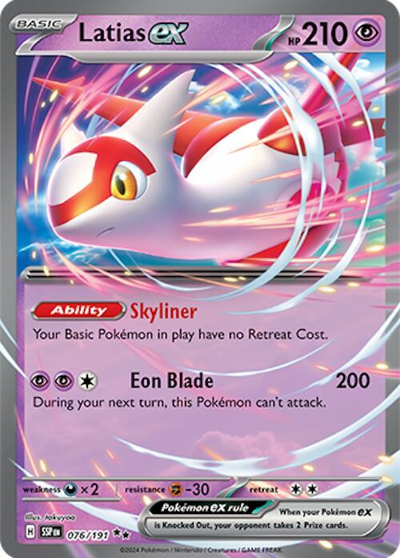
 x4
x4![Boss's Orders [Ghetsis]](./assets/654453_bosss-orders-ghetsis.jpg) x3
x3
 x4
x4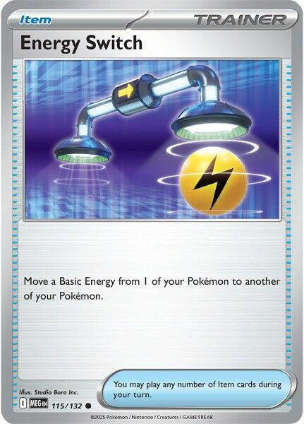
x4 x3
x3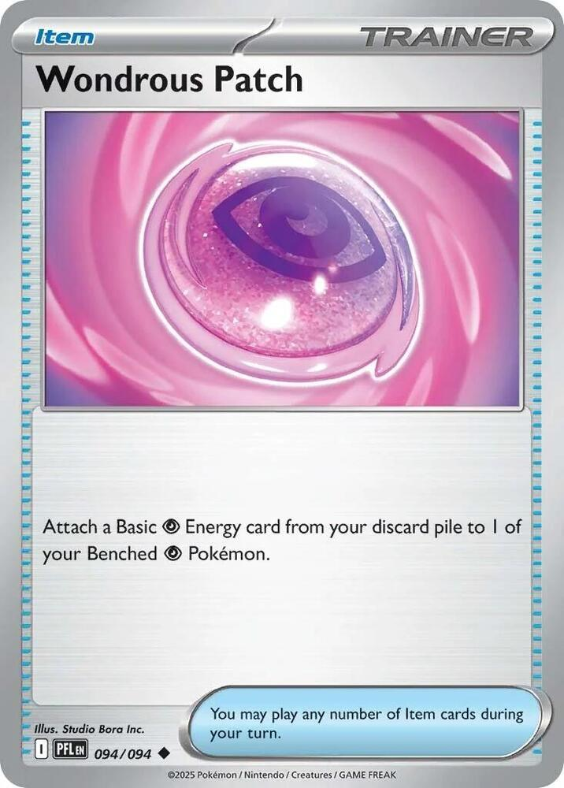
x3 x2
x2
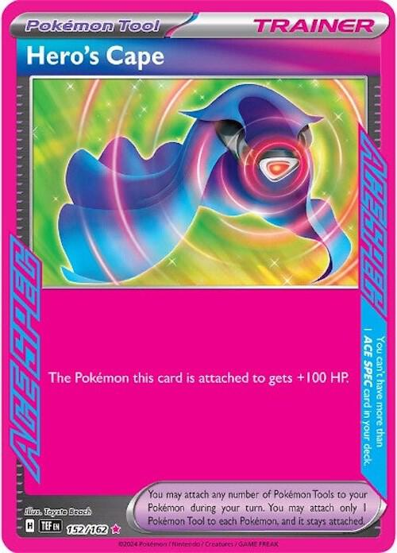
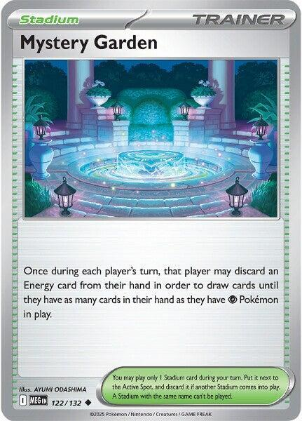
x3 x10
x10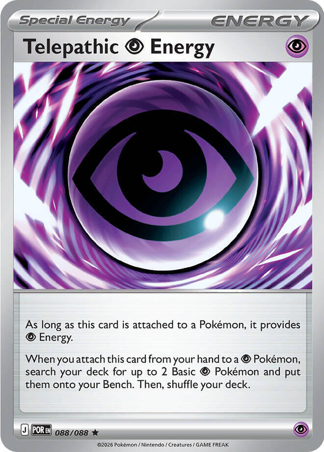
x4 Psychic Storm
Psychic Storm 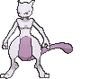
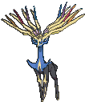
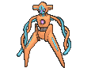
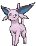
Mewtwo ex, Xerneas, and Espeon on one pile of Psychic Energy · a tournament-legal 60 for Fox
← back to all decks
x3
x4
x3

x3
x2
x4x3x4
x4x3
x3x2

x3x10
x4Pokémon (17)
| Qty | Card | Set | Number | Reg |
|---|---|---|---|---|
| 3 | Mewtwo ex | 30th Celebration | 064 | J |
| 4 | Xerneas | Chaos Rising | 042 | J |
| 3 | Deoxys | Chaos Rising | 031 | J |
| 1 | Deoxys | Chaos Rising | 032 | J |
| 3 | Eevee | Prismatic Evolutions | 074 | H |
| 2 | Espeon | 30th Celebration | 069 | J |
| 1 | Latias ex | Surging Sparks | 076 | H |
Trainers (29)
| Qty | Card | Type | Set | Number | Reg |
|---|---|---|---|---|---|
| 4 | Lillie's Determination | Supporter | Mega Evolution | 119 | I |
| 3 | Boss's Orders | Supporter | Mega Evolution | 114 | I |
| 1 | Hilda | Supporter | White Flare | 084 | I |
| 4 | Ultra Ball | Item | Mega Evolution | 131 | I |
| 4 | Energy Switch | Item | Mega Evolution | 115 | I |
| 3 | Poke Pad | Item | Perfect Order | 081 | J |
| 3 | Wondrous Patch | Item | Phantasmal Flames | 094 | I |
| 2 | Night Stretcher | Item | Shrouded Fable | 061 | H |
| 1 | Switch | Item | Mega Evolution | 130 | I |
| 1 | Hero's Cape | Tool, ACE SPEC | Temporal Forces | 152 | H |
| 3 | Mystery Garden | Stadium | Mega Evolution | 122 | I |
Energy (14)
| Qty | Card | Set | Number | Reg |
|---|---|---|---|---|
| 10 | Basic Psychic Energy | Mega Evolution Energies | 005 | - |
| 4 | Telepathic Psychic Energy | Perfect Order | 088 | J |
17 + 29 + 14 = 60. ✓ Fifteen Basics, eight Supporters, and one ACE SPEC. Xerneas and Deoxys each sit at four, which is the limit for the name across every print.
Fifteen Basics is a 12% mulligan. A Genome Charge Deoxys opens 36% of kept hands. Telepathic Psychic Energy is in 39% of them, and 45% counting the first draw going second; it benches two Basics whatever leads. Only 14% of opening hands hold no Energy.
Eevee, Latias ex, Night Stretcher, and Hero's Cape carry mark H and rotate around April 2027. Everything else is I or J.

 Psychic
Psychic Darkness ×2
Darkness ×2 Fighting -30
Fighting -30 2
2 legal (Reg J)Photon Bullets - This attack does 50 damage to each of your opponent's Pokémon ex. (Don't apply Weakness and Resistance for Benched Pokémon.)Psychic Powers (230) - During your next turn, this Pokémon can't use attacks.
legal (Reg J)Photon Bullets - This attack does 50 damage to each of your opponent's Pokémon ex. (Don't apply Weakness and Resistance for Benched Pokémon.)Psychic Powers (230) - During your next turn, this Pokémon can't use attacks.Basic, 230 HP, 2 Prizes, Darkness Weakness, Fighting Resistance, Retreat 2. The main attacker.
Psychic Powers does 230 for , and this Mewtwo can't attack during your next turn. The lock ends the moment it moves to the Bench. Retreat it for free with Latias ex out, swing with Xerneas, and the turn after that the same Mewtwo is ready again.
Photon Bullets is for 50 to each of the opponent's Pokémon ex, Bench included, with no Weakness or Resistance on the Bench. It is the setup turn against a board full of ex. A Benched Tera Pokémon, like Dragapult ex, takes none of it.
Three copies. Ultra Ball and Telepathic Psychic Energy find it. Poke Pad can't, since it has a Rule Box.

 Psychic2legal (Reg J)Geo Storm (30x) - This attack does 30 damage for each Psychic Energy attached to all of your Pokémon.
Psychic2legal (Reg J)Geo Storm (30x) - This attack does 30 damage for each Psychic Energy attached to all of your Pokémon.Basic, 130 HP, Metal Weakness, Retreat 2. The finisher.
Geo Storm costs and does 30 for each Psychic Energy attached to all of your Pokémon. The Energy can sit anywhere: on the Active, on a Benched Deoxys, on the Mewtwo waiting its turn. Telepathic Psychic Energy counts, because it provides . Its own three make 90, and eight in play make 240 from a Pokémon worth 1 Prize.
It is the only Pokémon here that isn't weak to Darkness, which makes it the attacker against Dad's decks. Metal is its problem, and Matt's Excadrill doubles into it.
Four copies, the most the name allows; every Xerneas print shares the four. Poke Pad, Ultra Ball, and Telepathic Psychic Energy find it.
 PsychicDarkness ×2Fighting -301legal (Reg J)Genome Charge - Search your deck for up to 2 Basic Psychic Energy cards and attach them to this Pokémon. Then, shuffle your deck.Psychic (80+) - This attack does 20 more damage for each Energy attached to your opponent's Active Pokémon.
PsychicDarkness ×2Fighting -301legal (Reg J)Genome Charge - Search your deck for up to 2 Basic Psychic Energy cards and attach them to this Pokémon. Then, shuffle your deck.Psychic (80+) - This attack does 20 more damage for each Energy attached to your opponent's Active Pokémon.Basic, 110 HP, Darkness Weakness, Fighting Resistance, Retreat 1. The engine.
Genome Charge costs : search your deck for up to 2 Basic Psychic Energy and attach them to this Deoxys. Going second, it is a turn-one attack. Lead with it, attach, and it ends the turn holding three Energy, which is 90 more on the next Geo Storm. Energy Switch then moves the two Basic Energy to whoever attacks.
Psychic is for 80, plus 20 for each Energy on the opponent's Active Pokémon.
Three copies. Every Deoxys shares one four-copy limit, so three of this one leave a slot for Fox's Psyspear. Poke Pad, Ultra Ball, and Telepathic Psychic Energy find it.
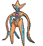
PsychicDarkness ×2Fighting -302legal (Reg J)Psyspear (120) - If this Pokémon has at least 2 extra Energy attached (in addition to this attack's cost), this attack also does 120 damage to 1 of your opponent's Benched Pokémon. (Don't apply Weakness and Resistance for Benched Pokémon.)Basic, 120 HP, Darkness Weakness, Fighting Resistance, Retreat 2. Fox's pick, and the second finisher.
Psyspear is for 120. With at least 2 extra Energy on this Deoxys, it also does 120 to one of the opponent's Benched Pokémon, with no Weakness or Resistance on the Bench.
Five Energy is a lot to park on 120 HP, so build it late with Energy Switch, on the turn the Bench hit takes a Prize. Those five count toward Geo Storm the whole time they sit there. One copy.


 ColorlessFighting ×21legal (Reg H)Reckless Charge (30) - This Pokémon also does 10 damage to itself.
ColorlessFighting ×21legal (Reg H)Reckless Charge (30) - This Pokémon also does 10 damage to itself.Basic Colorless, 50 HP, Fighting Weakness, Retreat 1. Espeon's Basic, the same print Fox's Rainbow DNA runs.
Boosted Evolution: while this Eevee is in the Active Spot, it can evolve during your first turn or the turn you play it. Bench Eevee only when Espeon is close, because a 50 HP Basic is a free Prize.
It is Colorless, so Telepathic Psychic Energy can't bench it and Mystery Garden doesn't count it. Three copies. Poke Pad and Ultra Ball find it.
PsychicDarkness ×2Fighting -301legal (Reg J)Miraculous Shine - Devolve each of your opponent's evolved Pokémon by putting the highest Stage Evolution card on it into your opponent's hand.Super Psy Bolt (90)Stage 1, 110 HP, Darkness Weakness, Fighting Resistance, Retreat 1. The answer to evolution decks.
Miraculous Shine is : devolve each of the opponent's evolved Pokémon by putting the highest Stage Evolution card on it into their hand. Every one, Active and Bench. Energy, Tools, and damage stay where they are. A Stage 2 that Rare Candy put down drops all the way to its Basic.
Damage stays, so a Pokémon that drops below its damage is Knocked Out. A Garchomp ex carrying 230 from Psychic Powers becomes a Gabite with 170 HP under Power Weight, and dies. It pays as what it is now, so that Gabite is 1 Prize, not 2. Bulbapedia's devolution page states the knockout rule. Check it with the league judge before it decides a game.
A Pokémon that Grimsley's Move benched never evolved and has nothing under it, so it stays. Super Psy Bolt is for 90. Two copies. Hilda and Poke Pad find it.
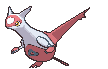
 PsychicDarkness ×2Fighting -302legal (Reg H)Eon Blade (200) - During your next turn, this Pokémon can't attack.
PsychicDarkness ×2Fighting -302legal (Reg H)Eon Blade (200) - During your next turn, this Pokémon can't attack.Basic, 210 HP, 2 Prizes, Darkness Weakness, Fighting Resistance, Retreat 2. The pivot.
Skyliner: your Basic Pokémon in play have no Retreat Cost. Every Pokémon here but Espeon is a Basic, so every retreat is free. That is what lets Mewtwo ex swing every other turn with Xerneas in between, and what lets a loaded Deoxys leave the Active Spot without paying Energy.
Eon Blade is for 200, and Latias can't attack next turn. It is 2 Prizes on the Bench, and Boss's Orders will find it. One copy, and the house already owns it.
 legal (Reg I)
legal (Reg I)Shuffle your hand into your deck and draw six, or eight while you still have all six Prizes. Four copies. Going second, the turn-one Lillie's for eight is legal and good. Look first; a hand that already holds a Deoxys, Telepathic, and an Energy Switch doesn't want shuffling.
legal (Reg I)Switch one of the opponent's Benched Pokémon into the Active Spot. Three copies. A 230 is worth what it lands on. Drag up the damaged ex that Geo Storm finishes, the Meowth ex worth 2 Prizes for one Psychic Powers, or the Energy engine their attacker runs on.
 legal (Reg I)
legal (Reg I)Search your deck for an Evolution Pokémon and an Energy card. One copy. Espeon is the only Evolution Pokémon here, so Hilda is an Espeon and a Telepathic Psychic Energy in one card.
legal (Reg I)Discard 2 other cards from your hand, then search your deck for any Pokémon. Four copies. It is the only search that finds Mewtwo ex and Latias ex. Discard Basic Psychic Energy when you can; Wondrous Patch puts it back on the board.
legal (Reg I)Move a Basic Energy from one of your Pokémon to another. Four copies, Mega Evolution 115, mark I. The older Scarlet and Violet print rotated.
This is how Genome Charge feeds the attacker. Two Switches move both Genome Energy from Deoxys onto a Benched Mewtwo ex, and the attachment makes three. It can't move Telepathic Psychic Energy, which is Special.
 legal (Reg J)
legal (Reg J)Search your deck for a Pokémon without a Rule Box. Three copies, printed Poké Pad, Perfect Order 081, mark J. It finds Xerneas, both Deoxys, Eevee, and Espeon, and never Mewtwo ex or Latias ex.
 legal (Reg I)
legal (Reg I)Attach a Basic Psychic Energy card from your discard pile to one of your Benched Psychic Pokémon. Three copies, Phantasmal Flames 094, mark I. It is an extra attachment for each copy, aimed at the Bench, never the Active or an Eevee. Mystery Garden, Ultra Ball, and every Knocked Out battery stock the discard pile it draws from.
 legal (Reg H)
legal (Reg H)Put a Pokémon or a Basic Energy card from your discard pile into your hand. Two copies. Late in the game it is the Xerneas or Mewtwo ex that went down, back for the finish.
legal (Reg I)Switch your Active Pokémon with one of your Benched Pokémon. One copy. It covers the games where Latias ex is prized or Knocked Out, and Mewtwo ex and Xerneas are back to Retreat 2.

 ACE SPEC Rarelegal (Reg H)
ACE SPEC Rarelegal (Reg H)The Pokémon this card is attached to gets +100 HP. The ACE SPEC, Temporal Forces 152, mark H.
It goes on Mewtwo ex against Fighting, and on Xerneas against Dad. A Cape'd Mewtwo ex has 330 HP behind Fighting Resistance, and Elliott needs a Draconic Buster with four boosts to kill it. A Cape'd Xerneas has 230, and lives through Chaotic Pain. If the Pokémon wearing it is Knocked Out, the Cape goes with it; Night Stretcher can't return a Tool.
legal (Reg I)Once during each player's turn, that player may discard an Energy card from their hand to draw until they hold as many cards as they have Psychic Pokémon in play. Three copies, Mega Evolution 122, mark I.
With five Psychic Pokémon down, it refills a hand to five for one Energy, and that Energy is Wondrous Patch's next attachment. It does little before the Bench fills. Both players can use it, so against another Psychic deck it draws for them too. It also knocks Risky Ruins and Battle Cage off the table.
legalTen. Genome Charge, Energy Switch, Wondrous Patch, and Night Stretcher only touch Basic Energy, so these are the ones that move. Any Basic Psychic print works.
Energy. When you attach this card from your hand to a Pokémon, search your deck for up to 2 Basic Pokémon and put them onto your Bench. Then, shuffle your deck.legal (Reg J)It provides . When you attach it from your hand to a Psychic Pokémon, search your deck for up to 2 Basic Psychic Pokémon and put them onto your Bench. Four copies, Perfect Order 088, mark J.
It is the turn-one card. It counts for Geo Storm like any other Psychic Energy, and the two it benches are usually Latias ex and the next attacker. It is a one-way trip. It is Special Energy, so Energy Switch can't move it and Night Stretcher and Wondrous Patch can't bring it back.
Geo Storm counts every Psychic Energy Fox has in play, wherever it sits. So nothing he attaches is wasted. A Deoxys holding three is 90 more damage on Xerneas, and so is the Mewtwo ex waiting out its lock.
Mewtwo ex hits first, and Xerneas finishes. Psychic Powers lands 230 on anything. The next turn, Mewtwo retreats for free and Xerneas swings for whatever is left. Mewtwo keeps its three Energy on the Bench, so that Geo Storm counts at least six: Mewtwo's three and Xerneas's own. The pair does 410 in two attacks, and every row below dies to it.
| Their Pokémon | HP | Left after 230 | Geo Storm needs |
|---|---|---|---|
| Blissey ex | 300 | 70 | 3 Energy in play, 90 |
| Dragapult ex | 320 | 90 | 3 Energy in play, 90 |
| Mega Excadrill ex | 340 | 110 | 4 Energy in play, 120 |
| Mega Gengar ex | 350 | 120 | 4 Energy in play, 120 |
| Cynthia's Garchomp ex, Power Weight | 400 | 170 | 6 Energy in play, 180 |
| Attack | Cost | Damage |
|---|---|---|
| Psychic Powers, Mewtwo ex | | 230, then it can't attack next turn |
| Geo Storm, Xerneas | | 30 per Psychic Energy in play: 180 at six, 240 at eight, 300 at ten |
| Psyspear, Deoxys 032 | | 120, plus 120 to the Bench with five Energy on it |
| Photon Bullets, Mewtwo ex | | 50 to every Pokémon ex they have |
| Miraculous Shine, Espeon | | no damage; every evolved Pokémon they have goes back a stage |
| Genome Charge, Deoxys 031 | | no damage; two Energy from the deck onto itself |
Most of the deck gives up 1 Prize. Xerneas, both Deoxys, and Espeon are the bodies that take the late hits, and Mewtwo ex is the only attacker worth two. The Prize Tax covers the rest.
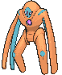
A few rules decide most games with this deck. The card sections explain the cards; this section explains the decisions.
| Their Active | Use | Why |
|---|---|---|
| 230 HP or less | Psychic Powers | it kills, and Xerneas covers the locked turn |
| Already holding Mewtwo's 230 | Geo Storm | the table in The Thesis says how much Energy it needs |
| A board of two or more ex | Photon Bullets | 50 on each sets up two knockouts at once |
| Stage 2s, or evolved Pokémon carrying damage | Miraculous Shine | every one goes back a stage, and the damaged ones die |
| Crustle | Geo Storm or Psyspear | neither is an ex, so Mysterious Rock Inn can't stop them |
Never leave Mewtwo ex Active on its locked turn. Retreat it for free and attack with someone else.
Six Prizes is three ex. The single-Prize bodies make the opponent take six knockouts, so give them those first.
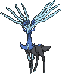
| Source | From | To | Costs |
|---|---|---|---|
| Your attachment | hand | any of your Pokémon | once a turn |
| Telepathic Psychic Energy | hand | a Psychic Pokémon, and two Basic Psychic Pokémon from the deck to the Bench | your attachment |
| Genome Charge | deck, 2 | the Deoxys that used it | its attack |
| Energy Switch | one of your Pokémon | another | an Item; Basic Energy only |
| Wondrous Patch | discard pile | a Benched Psychic Pokémon | an Item; Basic Psychic only |
| Night Stretcher | discard pile | hand | an Item; Basic Energy or a Pokémon |
| Hilda | deck | hand | your Supporter, with an Espeon |
| Mystery Garden | hand | discard pile | one Energy, for cards |
Energy on the board is damage. Every one anywhere is 30 on the next Geo Storm. Energy in the discard pile is next turn's Wondrous Patch. Only Energy left in the deck does nothing, which is why Genome Charge pulls two at a time.
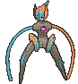
You can attack on your first turn going second, and the best attack is Genome Charge.
With Deoxys in front, attach to it, Telepathic if you have one, and Genome Charge. It ends the turn holding three Energy, and Telepathic has benched Latias ex and a Mewtwo ex.
Without a Deoxys, put Telepathic on the Active and bench Latias ex and a Deoxys. Play Lillie's while it still draws eight. With an Ultra Ball or Poke Pad spare, an Energy on the Benched Deoxys and a free retreat make the Genome Charge happen anyway.
You can't attack or play a Supporter, and every Item, Tool, and Stadium is still legal. Telepathic goes on the Active and benches two. Ultra Ball and Poke Pad fill the rest. Turn two is the same Genome Charge, or Photon Bullets from a Mewtwo ex holding two.
Mewtwo ex and Xerneas trade the Active Spot every turn, and Latias ex makes each swap free.
Between attacks, Energy Switch and Wondrous Patch keep three on whichever of the two attacks next. A second Mewtwo ex does the same job without Latias, at the cost of 2 more Prizes on the Bench.
Miraculous Shine is the play when damage is already down and the board is evolved.
It does no damage, and the knockouts pay 1 Prize each. On a turn where Geo Storm can take 2 Prizes from the same Pokémon, Geo Storm is better.
The Bench holds five. A working board is Latias ex, a Genome Charge Deoxys, a Xerneas, the next Mewtwo ex, and one spare.

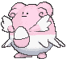
Xero's decks, from Fox's side of the table. His own page has the plan from the other chair.
Lucky Haunt, Xero's league deck. Xerneas carries this game. Every other Pokémon here is weak to Darkness, and every Darkness attacker in Lucky Haunt one-shots Mewtwo ex. Xerneas is weak to Metal, so nothing of his doubles into it.
| Xero's hit | Into Mewtwo ex at 230 | Into Xerneas at 130, or 230 Cape'd |
|---|---|---|
| Void Gale, Mega Gengar ex, 230 | 460, dies | dies, Cape or not |
| Chain-Crazed, Okidogi ex while Poisoned, 260 | 520, dies | dies |
| Return, Blissey ex, 180 | lives on 50 | dies; lives on 50 Cape'd |
| Gentle Slap, Toxtricity, 100 | 200, lives on 30 | lives on 30 |
| Chaotic Pain, Gengar ex, 13 counters | lives on 100 | dies; lives on 100 Cape'd |
, so it can't pay . Any Gengar that Grimsley's Move benched never evolved and stays.
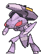

The Wednesday league at CardCrate draws from this field. Each opponent page has the pilot's full plan.
| Deck | The problem | The answer |
|---|---|---|
| Elliott's Cynthia's Garchomp ex | 400 HP under Power Weight, and Draconic Buster is 260 plus 30 for each Roserade and Premium Power Pro | Its own section below |
| Matt's Mega Excadrill ex | Maximum Drilling is 330 with two extra Energy, which kills the Cape'd Mewtwo ex exactly. Xerneas is Metal-weak, so Undermine's 90 kills it. | Psychic Powers, then Geo Storm, kills the 340. Keep Xerneas off the Active until that finish. Psychic Powers alone kills Genesect ex at 220, and Miraculous Shine turns Metang back into Beldum, which shuts off Metal Maker. |
| Steve's Dragapult ex | Phantom Dive is 200 to the Active and 6 damage counters across your Bench. A Benched Dragapult ex is Tera, so Photon Bullets can't touch it. | Mewtwo ex lives through the 200 on 30. Psychic Powers, then any Geo Storm, kills its 320. Keep Eevee off the Bench. |
| Crustle | Mysterious Rock Inn prevents all damage from Pokémon ex. Superb Scissors is 120, which kills either Deoxys. | Xerneas and Deoxys aren't ex. Geo Storm at five Energy kills its 150, and Scissors leaves Xerneas on 10. |


Elliott's deck is the hardest game in the room, and this is the best plan for it. Put the Cape on Mewtwo ex, and kill each Garchomp in two attacks: Psychic Powers for 230, then Geo Storm for 180 with Mewtwo's three and Xerneas's three in play.
Mewtwo ex resists Fighting by 30, so every Garchomp hit lands 30 short:
| Elliott's attack | Into Mewtwo ex at 230 | Cape'd, at 330 |
|---|---|---|
| Corkscrew Dive, two Roserade, 130 | dies to the second | dies to the third |
| Draconic Buster, no boosts, 230 | dies | lives on 100 |
| Draconic Buster, three boosts, 320 | dies | lives on 10 |
| Draconic Buster, four boosts, 350 | dies | dies |

The list is a hypothesis, and games on Live are the data.
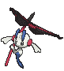
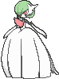
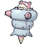
| Card | Swaps for | Play it when |
|---|---|---|
| Mega Floette ex (Chaos Rising 101) | a Poke Pad | the house gets one. It is a Basic Mega with 250 HP, weak to Metal. Eternity Bloom is for 200, and it attaches up to 4 Basic Psychic Energy from the deck to your Bench: 120 more on the next Geo Storm. It gives up 3 Prizes. |
| Jacinthe (Perfect Order 110) | Hilda | Elliott. It heals 150 from one Psychic Pokémon, which resets a Cape'd Mewtwo ex after a Corkscrew Dive. |
| Lillie's Clefairy ex (Journey Together 056) | a Poke Pad | Steve's Dragapult. Fairy Zone makes every Dragon Pokémon weak to Psychic, so Psychic Powers does 460 to Dragapult ex. The house owns one. |
| Prime Catcher (ACE SPEC) | Hero's Cape | the games are lost to stranded attackers rather than to big hits. It gusts and switches in one Item. |
| Maximum Belt (ACE SPEC) | Hero's Cape | the Card Shop field is all ex. Psychic Powers does 280 to an Active Pokémon ex. |
| Sparkling Crystal (ACE SPEC) | never | it lowers attack costs only for a Tera Pokémon, and nothing here is Tera. It belongs in Rainbow DNA. |
| Espeon ex (30th Celebration 070) | an Espeon | the deck wants a third attacker. Solar Beatdown is for 30 per Pokémon you have in play, 180 with a full board. It is a 260 HP Stage 1 worth 2 Prizes. |
| Xerneas (Mega Evolution 064) | a Geo Storm Xerneas | the Bench fills too slowly. Geo Gate is : put up to 3 Basic Psychic Pokémon from the deck onto the Bench. It shares the four-copy limit. |
| Mewtwo (30th Celebration 063) | a Poke Pad | Energy keeps piling up in the discard pile. Empower is : attach up to 2 Basic Energy from the discard pile to one Pokémon. It is a different name from Mewtwo ex. |
| Mega Slowbro ex and Slowpoke (Pitch Black 031, 029) | Latias ex and a Poke Pad | Fox wants a wall. Shellnado Spin is for 180, and whatever damages it next turn takes 12 damage counters. It gives up 3 Prizes. Xero's, offered. |
| Mega Chandelure ex line (Pitch Black 036-038) | never | Xero's, offered. A Stage 2 Mega with its own engine, and every Bench seat here should hold Energy. |
| Mega Gardevoir ex | a different deck | Fox wants Geo Storm bigger. Mega Symphonia is for 50 per Psychic Energy in play, on a 360 HP Stage 2 Mega. |